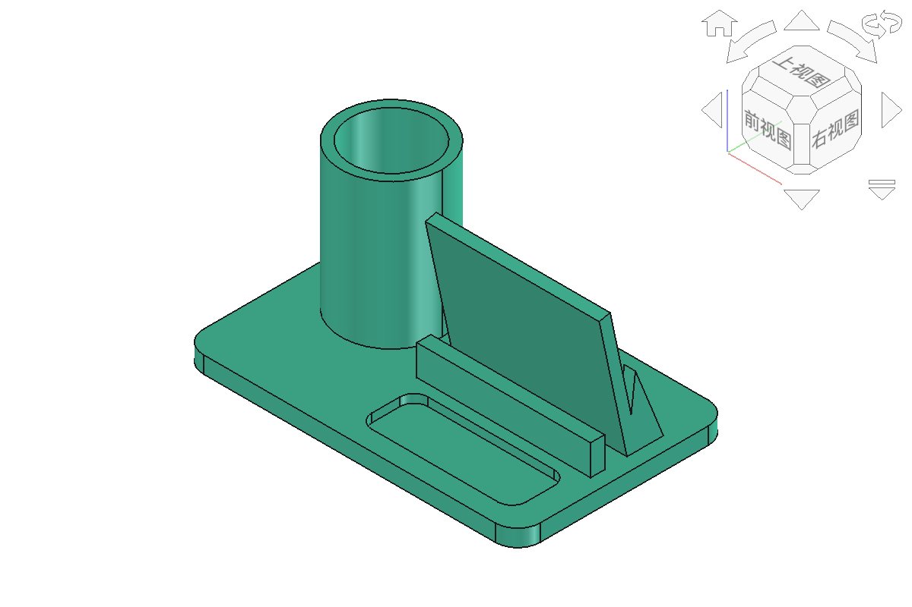

🏆
模块六
综合STEAM项目设计与成果展示
4课时 · 第18-21课 · 综合创新 · 占40%成绩
⚠️
课前预习！
📖 课前预习
- 回顾模块一到五所有技能
- 准备2-3个候选选题
- 画1-2个设计草图
- 了解PBL：问题→方案→建模→测试→展示
📋
项目方案书
- 项目名称、项目成员
- 设计目的（解决什么问题）
- 设计构思描述
- 手绘设计草图（含尺寸）
- 技术说明（用哪些技巧）
- STEAM融合说明（只写项目真正涉及的领域，不要求五项齐全）
🔄
PBL五阶段
- 1. 驱动问题：要解决什么？
- 2. 方案设计：草图·参数
- 3. 建模实践：FreeCAD编程建模
- 4. 测试优化：切片→打印→改进
- 5. 成果展示：方案书+PPT答辩
🔧
建模流程
- 1. 定义参数（所有尺寸变量化）
- 2. 创建主体（makeBox/makeCylinder）
- 3. 添加特征（布尔/圆角/挖槽）
- 4. 检查模型（体积>0·无破面）
- 5. 迭代优化（改参数→看结果→调整）
🔄
迭代思维
第一次建模通常不完美——这是正常的！
发现问题→分析原因→修改→再测试
工程思维核心：设计→验证→修正→再验证
📄
切片打印与文档
- 导出STL→Cura切片→设置参数
- 打印实物（耐心等待）
- 同步写方案书
- 拍照记录成品
🏆
结课综合项目参考
桌面学习站：笔具收纳+手机停放+小物浅盘+充电走线

🎤
四站并行展评
每轮8分钟：90秒陈述+2分钟问答+同伴评分与轮转
- 1. 项目介绍（名称·灵感·目标）
- 2. 设计过程（草图·建模截图）
- 3. 技术亮点（用了哪些技巧·困难与解决）
- 4. 成果展示（打印实物+个人贡献证据卡）
📊
评分标准
📄 文档与展示 30%
方案书完整·PPT清晰·答辩流利
🤔
项目反思
反思是学习的重要环节
- 学到了什么？
- 下次会怎么做？
- 如果再做一次，会改进什么？
🎉
恭喜完成课程！
你已掌握：
- ✏️ 手动建模（草图·约束·拉伸）
- 🐍 编程建模（Python·循环·函数）
- 📐 参数化设计（变量·布尔·数学函数）
- 🖨️ 3D打印（切片·参数·实操）
- 🏆 综合项目（PBL·答辩）
📚
课程回顾
21课时 · 6模块 · 6件学生作品
从3D打印启蒙到结课综合项目展评
STEAM理念 × 编程建模 × 3D打印
江苏省东台中学 · 课题编号 2024B-178 · 王华军 吴海燕